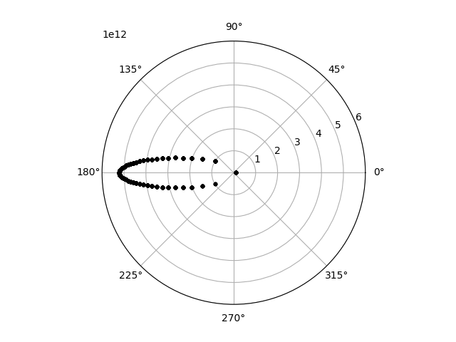

The Celmec Book - or learning elementary celectial mechanics via coding
This a book that want's to be 2 things at once:
- An introduction to elementary celestial mechanics.
- An guide to the
celmecRust library for celestial mechanics.
I'll try to write it so that no pre-requisite knowledge of celestial mechanics is necessary. Some knowledge of basic programming, Rust, Python (especially matplotlib) and vector algebra is needed, though.
After instructions on how to make the celmec library available for you, each chapter introduces a little simulation with visualization with Python. The chapters start with a section about some necessary physics to understand the simulation, the simulation itself as well as its results and then some additional physics which can be seen working in the simulation results. The physics sections will mainly provide ready formulas that other people have proved/calculated from lower principles, but for those interested, there will be references to other texts.
Currently celmec covers only the two-body problem ie. how to bodies move with gravity acting between them, but I'll attempt to extend the library (and then this book) in the future.
Getting the Celmec Library
Celmec is Rust library and can be made available by adding it to your Rust project's Cargo.toml. To get the necessary info about what Cargo.toml is read this and this section from the "The Rust Programming Language" -book.
To use celmec you need to add this to your project's Cargo.toml under [dependencies]:
celmec = { git = "https://github.com/juuso22/celmec.git" }
Celmec uses ndarray for vector algebra, so you also need to add that library to your Cargo.toml. The examples in this book point out which version of ndarray was used for them. I'll try to make it so that the examples would work with the latest version, but given that this a free-time project, I will be checking if newer version work only sporadically.
Two Body Problem
Two Body Problem: Simulation
As a first simulation with celmec, we'll simulate one round of Mercury around the sun as a two body problem. We'll first walk through building the simulation, but the final Rust code can be found further down.
Walking through the writing of the simulation
First init a new Rust project called two-body-problem:
cargo init two-body-problem
Edit the project's Cargo.toml by adding the following under [dependencies]:
ndarray = "0.15.6" #Or choose your preferred version
celmec = { git = "https://github.com/juuso22/celmec.git" }
Then we can start editing the project's src/main.rs. First, remove the default content and import the following from ndarray
use ndarray::{Array, Array1}
Then import the following from celmec:
use celmec::orbit;
The orbit module contains functions functions for the simulation.
Next, we need the masses of Mercury and the sun and some initial conditions for the position and velocity of the planet with respect to the sun. Sun's mass is (the googlable) 1.989 * 1030kg and the mass of Mercury (along other info about the planet that will be used), namely 3.3010 * 1023 kg, can be found from Nasa's fact sheet. To have some simple initial conditions, let's have Mercury furthest away from the sun it reaches (ie. Mercury's aphelion) and let's fix our coordinates so that this point is to the direction of the negative x-axis. The distance of Mercury from the sun in the aphelion is 69.818 * 109 m. According to Kepler's third law, Mercury's orbital velocity is the slowest at aphelion. That slowest speed is 38.86 * 103 m/s and that is in the direction of the negative y-axis. Let's decide, for convenience, that is the to the direction of the negativee y-axis. As a small spoiler, choosing to start with negative values will align our xy-plane nicely with the choice of polar coordinates that will be done later. Now we write all this into the main function of our project:
let mu: f64 = orbit::calculate_mu(3.301e23, 1.989e30);
let rr: Array1<f64> = array![-69.818e9, 0., 0.];
let vv: Array1<f64> = array![0., -38.86e3, 0.];
Before using these values for the simulation, let's first check a key quantity of the system from them: the eccentricity e:
let e: f64 = orbit::calculate_e(rr.clone(), vv.clone(), mu);
println!("Eccentricity: {}", e);
Then we need some info about how long and how finely we want to simulate:
let steps: usize = 100;
let simulation_time: f64 = 7603200.;
The steps is the number of point we want to have results for and simulation_time is the sideral orbit period from the fact sheet above converted to seconds (so * 24 h/d * 60 min/h * 60 s/min). Then we can calculate the true anomaly f for our simulation period using celmec:
let f: Array1<f64> = orbit::calculate_f_from_initial_rr_and_vv(
rr.clone(),
vv.clone(),
mu,
simulation_time,
steps,
);
Despite starting with xy-coordinates, let's switch to polar coordinates as they are somewhat more convenient for orbits. We chose the orbital plane as our xy-plane and in that plane f will serve as the angle for polar coordinates in that plane. But we still need radii corresponding to the values of f we obtained above. For that, we need the semi-major axis a of the system and can then proceed to calculate the radius:
let a: f64 = orbit::calculate_a_from_initial_rr_and_vv(rr, vv, mu);
let radius: Array1<f64> = orbit::calculate_radius_from_f(f.clone(), e, a);
Let's then print some values from our simulation as checks:
println!(
"Maximum distance from the sun (aphelion): {}",
radius.iter().max_by(|a, b| a.total_cmp(b)).unwrap()
);
println!(
"Minimum distance from the sun (perihelion): {}",
radius.iter().min_by(|a, b| a.total_cmp(b)).unwrap()
);
And then write the results into a file. First some imports to the beginning of our main.rs:
use std::fs::File;
use std::io::Write;
And then the actual writing inside the main function:
let mut coordinate_file = File::create("mercury.csv").unwrap();
write!(coordinate_file, "radius,f\n").unwrap();
for i in 0..=(steps - 1) {
write!(coordinate_file, "{},{}\n", radius[i], f[i]).unwrap();
}
Final Rust code
Cargo.toml:
[package]
name = "two-body-problem"
version = "0.1.0"
edition = "2021"
[dependencies]
ndarray = "0.15.6"
celmec = { git = "https://github.com/juuso22/celmec.git" }
main.rs:
use celmec::orbit;
use ndarray::{array, Array1};
use std::fs::File;
use std::io::Write;
fn main() {
let mu: f64 = orbit::calculate_mu(3.301e23, 1.989e30);
let rr: Array1<f64> = array![-69.818e9, 0., 0.];
let vv: Array1<f64> = array![0., -38.86e3, 0.];
let e: f64 = orbit::calculate_e(rr.clone(), vv.clone(), mu);
println!("Eccentricity: {}", e);
let steps: usize = 100;
let simulation_time: f64 = 7603200.;
let f: Array1<f64> = orbit::calculate_f_from_initial_rr_and_vv(
rr.clone(),
vv.clone(),
mu,
simulation_time,
steps,
);
let a: f64 = orbit::calculate_a_from_initial_rr_and_vv(rr, vv, mu);
let radius: Array1<f64> = orbit::calculate_radius_from_f(f.clone(), e, a);
println!(
"Maximum distance from the sun (aphelion): {}",
radius.iter().max_by(|a, b| a.total_cmp(b)).unwrap()
);
println!(
"Minimum distance from the sun (perihelion): {}",
radius.iter().min_by(|a, b| a.total_cmp(b)).unwrap()
);
let mut coordinate_file = File::create("mercury.csv").unwrap();
write!(coordinate_file, "radius,f\n").unwrap();
for i in 0..=(steps - 1) {
write!(coordinate_file, "{},{}\n", radius[i], f[i]).unwrap();
}
}
Visualising the results
To visualise the results, the following bit of Python code can be used. Have Python and the necessary libraries installed, and then run the script inside the base directory of the cargo project with:
python plot_two_body_orbit.py
The script itself:
#!/usr/bin/python
import pandas as pd
import math
import matplotlib.pyplot as plt
from matplotlib.animation import FuncAnimation, PillowWriter
df=pd.read_csv("mercury.csv")
def plot_2d_orbit(i):
plt.polar(df.f[0:i], df.radius[0:i], 'k.')
def main():
fig = plt.figure()
plotn=111
ax = fig.add_subplot(plotn, polar=True)
ax.set_rlim(rmin=0, rmax=7e10)
anim = FuncAnimation(fig, plot_2d_orbit, frames=100, repeat=True)
f = r"mercury.gif"
writergif = PillowWriter(fps=20)
anim.save(f, writer=writergif)
plt.show()
if __name__ == "__main__":
main()
A look at the results
The Python script should produce a plot with the all the points at different times plotted at once and an animated gif of the time evolution of the orbit. Let's look at the final plot first:

We have a fairly circular orbit around the origin, which is indeed how a planet's orbit around the sun should look like. By looking carefully, we see that that the orbit is not quite a circle, but stratches further away from the origin on the left. In fact, the orbit should be an ellipsis in fact, but that is perhaps a bit hard to tell with naked eye (at least for the author).
Then, there is the animation:
Mercury's orbit animated

Looking at the animation, we see it starting from the aphelion in the left as expected given our choice of the initial coordinates. One full orbit is then completed. Because true anomaly is measured from perihelion and matplolib sets the zero angle to the direction of the positive x-axis, we picked our initial position and velocity in the way we did so they would align with the final polar view we are using.
Hyperbolic and parabolic orbits
Instead of a closed, elliptic orbit like Mercury's objects can also just fly past each other. This happens when we have:
\[ e \ge 1 \]
The \( e > 1 \) case corresponds to a hyperbole-shaped orbit and the \( e = 1 \) case to a parabola and after some algebra the replacement for Kepler equation for these two cases becomes:
\[ n(t-\tau) = e\sinh{E} - E, \textrm{ when } e \gt 0 \]
\[ n(t-\tau) = \frac{E^3}{6}+\frac{E}{2}, \textrm{ when } e = 0 \]
Where the quantity \( n \) cannot geometrically be understood as in the elliptic case, but obeys the formula:
\[ n = \sqrt{\mu}a^\frac{-3}{2} \]
In case of an eccentricity greater or equal to 1, celmec solves these equations instead of the Kepler equation.
Simulating a hyperbolic orbit
To simulate a hyperbolic orbit, we can use the Mercury example, but give the nearest planet the following initial conditions:
let rr: Array1<f64> = array![-3e11, 0., 0.];
let vv: Array1<f64> = array![-6e4, -1e4, 0.];
The plotting script also needs a small scaling adjustment then:
ax.set_rlim(rmin=0, rmax=3.1e11)
and rerunning the simulation we should end up with the following:

and the same animated:
"Flyby Mercury's" orbit animated

You can try playing around with different initial conditions, simulation times and object masses to see what kind of orbits you'll get!
Parabolic orbit simulation
As it's a bit tedious to construct a combination of initial conditions and masses that would result in an eccentricity of exactly 1, it would be handy if we could start by telling celmec to simulate using a given e. Here is where it's time to change chapters and talk about orbital elements which will enable us to do just that.
Keplerian Elements
Keplerian Elements: Simulation
To demonstrate the use of Keplerian elements, let's calculate the orbit of Halley's comet. I have stolen the Keplerian elements from Wikipedia.
Walking through the writing of the simulation
First init a new rust project called halleys-comet:
cargo init halleys-comet
Edit the project's Cargo.toml by adding the following under [dependencies]:
celmec = { git = "https://github.com/juuso22/celmec.git" }
ndarray = "0.15.6" #Or choose your preferred version
Then we can start editing the project's src/main.rs. First, remove the default content and import the following from ndarray
use ndarray::{Array, Array1}
Then import the following from celmec:
use celmec::orbital_elements
The orbital_elements module contains a sturct called KeplerianElements which will contain the Keplerian elements of the body we want to simulate. The following abbreviations for the elements are used (for a full list of all abbreviations used in celmec see Glossary of Terms):
a - semi-major axis
e - eccentricity
iota - inclination
tau - perihelion time
omega - argument of periapsis
In our main function, let's create an instance of KeplerianElements for Halleys' comet:
let halleys_keplerian_elements = orbital_elements::KeplerianElements {
e: 0.96658,
longitude_of_the_ascending_node: 1.03665,
tau: 0.,
a: 2.65342e12,
iota: 2.82673,
omega: 1.95564,
};
Everything is in SI units and the perihelion time is set to zero for simplicity.
Next, we need some mote imports from celmec to actually calculate something using the orbital elements:
use celmec::{orbit, orbital_elements};
The orbit module has functions to calculate properties of the orbit and/or time evolution of various quantities. We'll first calculate the time evolution of true anomaly (denoted f) from the Keplerian elemnts. We'll cheat a little and choose the time interval for which calculate from tau to tau + the time of one rotation of the comet around the sun to see a nice full ellipsis. The time of the rotation we look up again from Wikipedia and convert it to seconds:
let ticks = 200;
let rotation_time = 2379801600.;
let time: Array1<f64> = Array::linspace(halleys_keplerian_elements.tau, halleys_keplerian_elements.tau + rotation_time, ticks);
let f: Array1<f64> = orbit::calculate_f_from_series(
time.clone(),
halleys_keplerian_elements.e,
rotation_time,
halleys_keplerian_elements.tau,
);
Here series refers to the Fourier series. The array f represents the true anomaly at each point of time we are calculating for.
From true anomaly and the Keplerian elemnts, polar coordinates (with Sun at the origin) be calculated over our chosen time interval time. First we need to add another import, though:
use celmec::{orbit, orbital_elements, transformations};
Then we can calculate:
let radius = orbit::calculate_radius_from_f(
f.clone(),
halleys_keplerian_elements.e,
halleys_keplerian_elements.a,
);
let polar_angle = transformations::polar_angle_from_keplerian_elements(
f.clone(),
halleys_keplerian_elements.iota,
halleys_keplerian_elements.omega,
);
Let's write the polar coordinates and time into a file. First some imports:
use std::fs::File;
use std::io::Write;
Then the actual writing:
let mut coordinate_file = File::create("halleys_polar_coordinates.csv").unwrap();
write!(coordinate_file, "t,radius,polar_angle\n").unwrap();
for i in 0..=(ticks - 1) {
write!(
coordinate_file,
"{},{},{}\n",
time[i], radius[i], polar_angle[i]
)
.unwrap();
}
Final rust code
Cargo.toml:
[package]
name = "halleys-comet"
version = "0.1.0"
edition = "2021"
# See more keys and their definitions at https://doc.rust-lang.org/cargo/reference/manifest.html
[dependencies]
ndarray = "0.15.6"
celmec = { git = "https://github.com/juuso22/celmec.git" }
src/main.rs:
use celmec::{orbit, orbital_elements, transformations};
use ndarray::{Array, Array1};
use std::fs::File;
use std::io::Write;
fn main() {
let halleys_keplerian_elements = orbital_elements::KeplerianElements {
e: 0.96658,
longitude_of_the_ascending_node: 1.03665,
tau: 0.,
a: 2.65342e12,
iota: 2.82673,
omega: 1.95564,
};
let ticks = 200;
let rotation_time: f64 = 2379801600.;
let time: Array1<f64> = Array::linspace(
halleys_keplerian_elements.tau,
halleys_keplerian_elements.tau + rotation_time,
ticks,
);
let f: Array1<f64> = orbit::calculate_f_from_series(
time.clone(),
halleys_keplerian_elements.e,
rotation_time,
halleys_keplerian_elements.tau,
);
let radius = orbit::calculate_radius_from_f(
f.clone(),
halleys_keplerian_elements.e,
halleys_keplerian_elements.a,
);
let polar_angle = transformations::polar_angle_from_keplerian_elements(
f.clone(),
halleys_keplerian_elements.iota,
halleys_keplerian_elements.omega,
);
let mut coordinate_file = File::create("halleys_polar_coordinates.csv").unwrap();
write!(coordinate_file, "t,radius,polar_angle\n").unwrap();
for i in 0..=(ticks - 1) {
write!(
coordinate_file,
"{},{},{}\n",
time[i], radius[i], polar_angle[i]
)
.unwrap();
}
}
Visualising the results
To visualise the results, the following bit of Python code can be used. Have Python and the necessary libraries installed, and then run the script inside the base directory of the cargo project with:
python plot_halleys_orbit.py
The script itself:
import pandas as pd
import math
import matplotlib.pyplot as plt
from matplotlib.animation import FuncAnimation, PillowWriter
df=pd.read_csv("halleys_orbit_2d.csv")
def plot_2d_orbit(i):
plt.polar(df.f[0:i], df.radius[0:i], 'k.')
def main():
fig = plt.figure()
plotn=111
ax = fig.add_subplot(plotn, polar=True)
ax.set_rlim(rmin=0, rmax=6e12)
anim = FuncAnimation(fig, plot_2d_orbit, frames=50, repeat=True)
f = r"halley.gif"
writergif = PillowWriter(fps=20)
anim.save(f, writer=writergif)
plt.show()
if __name__ == "__main__":
main()
So what do the simulation results look like
The way the above python script is done, should save an animated gif, but print a graph where the position of the comet at all the chosen time points. That graph should look something like this:

The orbit look like an ellipse as it should. Moreover, it can be seen that the further from the middle (ie. the Sun) the comet is the closer the plotted orbit points are to each other. As the time between two consecutive points is constant, this means that the further the comet is from the Sun, the slower it moves. This is even clearer in the animation of the orbit:
Halley's comet's orbit animated

This is in fact what Kepler's third law tells us and to explain what that is all about, it's best to jump to the next physics chapter.
Keplerian Elements: Parabolic Orbit
With Keplerian elements, creating a simulation for parabolic orbit becomes somewhat easier. Instead of trying to figure out a right position-velocity combination to get \( e = 1 \), we can just set the eccentricity to one. Let's do that for Halley's comet by changing the definition of the Keplerian elements from the previous simulation to the following:
let halleys_keplerian_elements = orbital_elements::KeplerianElements {
e: 1., //This has now changed compared to the previous simulation
longitude_of_the_ascending_node: 1.03666,
tau: 0.,
a: 2.65342e12,
iota: 2.82674,
omega: 1.95564,
};
One further change is needed. As the orbit will now be parabolic, there is no longer a rotation_time which can be used to calculate the 5th argument in:
let eccentric_anomaly: Array1<f64> = orbit::calculate_eccentric_anomaly_iteratively(
time.clone(),
time.clone(),
0.00001,
100,
2. * PI / rotation_time,
halleys_keplerian_elements.e,
halleys_keplerian_elements.tau,
);
But that 5th argument is the quantity \(n\), which can alternatively be calculated from the formula:
\[ n = \sqrt{\mu}a^\frac{-3}{2}, \textrm{ where } \mu = G(m_1m_2) \]
celmec in fact has functions to calculate bot \(n\) and \(\mu\). Let's first add a line somewhere before the calculation of the eccentric anomaly which calculates the latter. I'll be lazy and not look up any estimates for the mass of the comet but simply set \(m_1\) to the mass of the Sun and \(m_2=0\):
let mu: f64 = orbit::calculate_mu(1.989e30, 0.);
Then the 5th parameter in the calculation of the eccentric anomaly can be set as follows:
let eccentric_anomaly: Array1<f64> = orbit::calculate_eccentric_anomaly_iteratively(
time.clone(),
time.clone(),
0.00001,
100,
orbit::calculate_n(mu, halleys_keplerian_elements.a),
halleys_keplerian_elements.e,
halleys_keplerian_elements.tau,
);
When you run the simulation, Rust compiler will complain about unused import of the PI constant. You can get rid of that by commenting the line:
use std::f64::consts::PI;
if you want to.
Simulation results
Running the modified Rust coed and the plotter script should yield the following nice parabola:

And the same thing animated:
"Flyby Halley's" orbit animated

Keplerian Elements: Coordinate Transformation
So far all the visualisations in this book have been restricted to the orbital plane of the system being simulated. However, the Keplerian elements contain a bunch of angles, which determine the the position of the orbit with respect to the orbital plane of the Earth. For 3d visuals, let us know use these angles to switch from the plane of the system to a three-dimensional volume where the Sun lies at origin and the xy-plane is the orbital plane of the earth and use spherical coordinates there. In order to do that, we can copy the code from the original simulation of Halley's comet's orbit and add some pieces.
Firstly, in order to do the coordinate switch, we'll need the transformations module of celmec so we'll modify our imports as follows:
use celmec::{orbit, orbital_elements, transformations};
Then, after calculating the radii and true anomalies, the new module can be used to perform the coordinate transformation:
let spherical_coordinates: (Array1<f64>, Array1<f64>) =
transformations::spherical_coordinates_from_f_and_keplerian_elements(
f,
halleys_keplerian_elements,
);
Then the output file generation has to be adjusted as well. Instead of what we previously had, we'll use:
let mut coordinate_file = File::create("halleys_orbit_3d.csv").unwrap();
write!(coordinate_file, "t,radius,theta,phi\n").unwrap();
for i in 0..=(ticks - 1) {
write!(
coordinate_file,
"{},{},{},{}\n",
time[i], radius[i], spherical_coordinates.0[i], spherical_coordinates.1[i]
)
.unwrap();
}
The Final Rust Code
In the end, Config.toml should look like this:
[package]
name = "coordinate-transformation"
version = "0.1.0"
edition = "2021"
[dependencies]
ndarray = "0.15.6"
celmec = { git = "https://github.com/juuso22/celmec.git" }
and main.rs should look like this
use celmec::{orbit, orbital_elements, transformations};
use ndarray::{Array, Array1};
use std::f64::consts::PI;
use std::fs::File;
use std::io::Write;
fn main() {
let halleys_keplerian_elements = orbital_elements::KeplerianElements {
e: 0.96658,
longitude_of_the_ascending_node: 1.03666,
tau: 0.,
a: 2.65342e12,
iota: 2.82674,
omega: 1.95564,
};
let ticks = 50;
let rotation_time: f64 = 2379801600.;
let time: Array1<f64> = Array::linspace(
halleys_keplerian_elements.tau - rotation_time / 2.,
halleys_keplerian_elements.tau + rotation_time / 2.,
ticks,
);
let eccentric_anomaly: Array1<f64> = orbit::calculate_eccentric_anomaly_iteratively(
time.clone(),
time.clone(),
0.00001,
100,
2. * PI / rotation_time,
halleys_keplerian_elements.e,
halleys_keplerian_elements.tau,
);
let f: Array1<f64> =
orbit::calculate_f_from_eccentric_anomaly(eccentric_anomaly, halleys_keplerian_elements.e);
let radius = orbit::calculate_r_from_f(
f.clone(),
halleys_keplerian_elements.e,
halleys_keplerian_elements.a,
);
let spherical_coordinates: (Array1<f64>, Array1<f64>) =
transformations::spherical_coordinates_from_f_and_keplerian_elements(
f,
halleys_keplerian_elements,
);
let mut coordinate_file = File::create("halleys_orbit_3d.csv").unwrap();
write!(coordinate_file, "t,radius,theta,phi\n").unwrap();
for i in 0..=(ticks - 1) {
write!(
coordinate_file,
"{},{},{},{}\n",
time[i], radius[i], spherical_coordinates.0[i], spherical_coordinates.1[i]
)
.unwrap();
}
}
Visualising the results
For the visualisation, the following python script can be used:
TODO: add script
which can be run like this:
TODO
This should give something like this:
TODO: pic and gif here
Underlying Physics
This chapter describes the physics used in celmec.
Currently almost everything comes from "Johdatus Taivaanmekaniikkaan" from Karttunen (2020) unless explicitly otherwise cited.
Glossary of Terms
This a list of abbreviations that celmec aims to use:
a - semi-major axis
ee - vector pointing towards the perihelion
e - eccentricity (euclidean norm of ee)
f - true anomaly
G - gravitational constant
h - energy integral (freely translated from Finnish 'energiaintegraali' used in Johdatus Taivaanmekaniikkaan by Karttunen, 2020)
kk - angular momentum vector
k - angular momentum scalar (euclidean norm of kk)
m - mass
n - average angular velocity
rr - position vector
r - distance (euclidean norm of rr)
vv - velocity vector
v - velocity (euclidean norm of vv)
t - time
theta - polar angle (spherical coordinates)
iota - inclination
tau - perihelion time
phi - azimuthal angle (spherical coordinates)
omega - argument of periapsis
Note in the above, that when same letter is usually used for a scalar and a vector, the letter is doubled for the vector in the code.